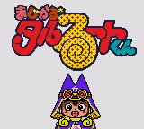

Magical Taruruuto-kun - Game Gear Games

- Date Released: 5 July 1997
- Price (in yen): 3980
- Genre: Shooting game
Controls
- A button: Shoot
- B button: [not used]
- Start: Pause
The enemies you face all seem to be objects that have come alive. Fire extinguishers will shoot balls of deadly water
at you. Pencils and paper airplanes will attack you. I don't know anything about the series, but the game feels like a
cute version of Parodius.
Anime Video Game Resource Center © 1998 by Luis A. Cruz